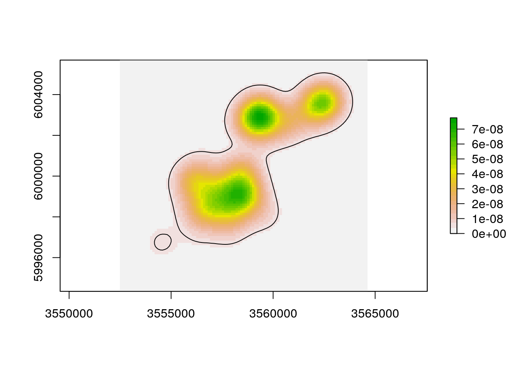

Most steps that are available from the GUI can also be called from the command line.
library(rhr)
data(datSH)
str(datSH)## 'data.frame': 1500 obs. of 5 variables:
## $ collar : chr "c5182" "c5182" "c5182" "c5182" ...
## $ x_epsg31467: int 3558403 3558548 3558541 3558453 3558566 3557836 3557881 3557150 3557021 3555975 ...
## $ y_epsg31467: int 5999400 5999099 5999019 5999026 5999365 5999185 5999139 5999159 5998865 5997615 ...
## $ day : chr "2009-02-13" "2009-02-13" "2009-02-13" "2009-02-13" ...
## $ time : chr "00:02:23" "06:02:21" "12:01:51" "18:00:55" ...We see that x and y coordinates are saved in the second and third column. Next we will perform a KDE.
kd1 <- rhrKDE(datSH[, 2:3])## rhrRasterFromExt: using equal nrow and ncolThe kde functions take three additional arguments: bandwidth, template raster and levels.
The bandwidth can be provided as a vector of length one or two. Several methods to estimate bandwidth are available.
rhrHref: estimates the reference bandwidth.rhrHlscv: estimates the least square cross validation bandwidth.rhrHpi: estimates the plug in the equation bandwidth.rhrHrefScaled: estimates a scaled re fence bandwidth (as described in @Kie2013)The default bandwidth is the reference bandwidth.
## Calculating reference bandwidth:
(href <- rhrHref(datSH[, 2:3]))## $h
## [1] 618.104 618.104
##
## $rescale
## [1] "none"## Or plugin the equation
(hpi <- rhrHpi(datSH[, 2:3]))## $h
## [1] 65.04826 74.39719
##
## $rescale
## [1] "none"
##
## $correct
## [1] TRUEkdehref1 <- rhrKDE(datSH[, 2:3], h = href$h)## rhrRasterFromExt: using equal nrow and ncolkdehref2 <- rhrKDE(datSH[, 2:3], h = rhrHref(datSH[, 2:3])$h)## rhrRasterFromExt: using equal nrow and ncol## Are they the same
identical(rhrUD(kdehref1), rhrUD(kdehref2))## [1] TRUEOnce we successfully estimated a KDE, there are several things we can do with. The first thing might be to plot it:
plot(kdehref1)
The functions rhrUD and rhrIsopleths allows to retrieve the UD and isopleths respectively.
ud <- rhrUD(kdehref1)
class(ud)## [1] "RasterLayer"
## attr(,"package")
## [1] "raster"The ud is a RasterLayer from the raster package. Similarly we can obtain the the isopleths at a predefined or specific level.
## the default level of 95
iso1 <- rhrIsopleths(kdehref1)
plot(iso1)class(iso1)## [1] "SpatialPolygonsDataFrame"
## attr(,"package")
## [1] "sp"## other levels
iso2 <- rhrIsopleths(kdehref1, levels = seq(10, 90, 5))
plot(iso2) The rhrArea functions returns the home-range area at a given isopleth.
## default level
rhrArea(kdehref1)## level area
## 1 95 38325055## other levels
rhrArea(kdehref1, levels = seq(10, 90, 5))## level area
## 1 10 1401063
## 2 15 2203714
## 3 20 3089250
## 4 25 4019084
## 5 30 5011304
## 6 35 6069462
## 7 40 7215234
## 8 45 8435629
## 9 50 9771290
## 10 55 11211624
## 11 60 12819124
## 12 65 14571133
## 13 70 16664247
## 14 75 18931113
## 15 80 21714672
## 16 85 25249938
## 17 90 30171443Isopleths can be saved various GIS formats, e.g.,
raster::shapefile(iso1, "myShape.shp")